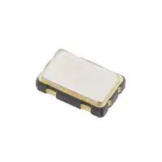
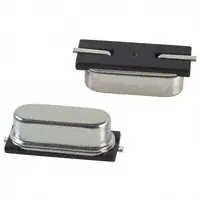

Component Selection
Team Assignment
Objectives
To identify, compare, and contrast multiple solutions for subsystem, and articulate a rationale for your final choices. Once every member in the team has made a final choice, Create a Bill of Materials, Once the BOM is complete then fill out and submit a Purchase form to PolyBizz (polybizz@asu.edu) Only one person on the team will e-mail the purchase form. Please CC your entire team, the Instructor, and the teaching team in this email. If changes need to be made you are responsible for making any changes PolyBizz requests.
Resources
- Example Power Budget
- Ordering Resources folder
- Sources pages on the Embedded Systems Design Resources blog
- Canvas Discussion Board
Assignment
In this written assignment, you must identify, compare, and contrast multiple solutions for every major component in your design. Major components include every component in your subsystem in the team block diagram, and any major mechanical parts.
Your assignment should consist of the following parts:
-
Major component selections - For each block in your block diagram and major mechanical components, you must research the following:
Create separate tables (see example later in this document) describing at least 3 potential solutions for each major component in your subsystem describing multiple pros and cons of each solution. You should also consider your project specifications when writing pros and cons.
EGR 314: All components (except for headers and connectors) must be surface mount. For resistors and capacitors, size 0805 or larger is recommended. Exceptions allowed with prior approval from your professor.
Each commercial option must include a photo and a link to the product, along with unit cost. Do not paste a plain hyperlink. Instead, create a link with short descriptive text (like this link).
Notes: The embedded systems design website has a number of recommended sources for components. Do not select parts from Amazon unless they come with datasheets or at a very minimum detailed specifications (required for proper design).
Then, choose the optimal solution for your design and provide rationale for why your choice is optimal. Your rationale should be strong (e.g., avoid rationale such as "I chose this part because it's the first one on Google that met our specifications"). See example in Table 1 below.
-
Bill of Materials - Each member must update the Team Bill of Materials with there coresponding subsytem including major components and smaller subcomponents (resistors, capacitors, headers, jumpers etc)
All Subcomponents must be 0805 or larger.
Please make sure all components are availble to avoid back ordering (meaning longer wait times)
-
Create Order Forms per vendor and email them to PolyBizz with (cc team, instructor, and teaching team)
Create one order form per vendor by copying the class order form template linked above NEW: if you are ordering more than 10 items from a vendor like digikey, please -- in addition to your purchase request form -- include in your request a link to your "shopping cart" when possible.

Preparation and Submission
This work will be used -- and graded -- in multiple ways. It will be checked for completeness on the date given in Canvas.
Preparation
Please prepare this assignment as a new pages on your github webpage. Once completed,
- Create a link to these new pages on your website
- Check the link to ensure that it works
- export these new pages as a pdf
The new page representing your assignment should not present as a page of links. Do not use it to link to other documents especially living documents, such as google docs, draw.io drawings, or google sheets. Rather, contents from other documents should be exported, saved in your repository, and hosted natively in markdown (or if need be html) in the page itself.
Submission
To submit a complete assignment, please submit:
- A working URL to the new Component Selection page (website and PDF).
- A working URL Bill of Materials (Website and PDF)
- Screenshot Confirmation (PolyBizz)
Both items must be submitted, by the deadline in the Canvas course calendar, in order to receive full credit. It is your responsibility to ensure that your submission to Canvas was successful. Late Canvas submissions will be graded per the policy in the syllabus.
Grading
| Item | Points |
|---|---|
| Component Selection | 25 |
| Bill of Materials | 25 |
| Email Confirmation (PolyBizz) | 25 |
| Total | 75 |
Completeness
The initial assessment of this assignment (on the due date in Canvas) will be for completeness. Thus, no credit will be awarded for assignments not submitted -- or submitted incorrectly -- to Canvas.
Qualitative Assessment
This document will assessed for quality by the teaching team. Before then, please engage with the teaching team during office hours and/or classtime to review this document for ways to improve it. We are happy to provide feedback, which will be your responsibility to integrate and address before the external design review.
Subsequent Uses of this Document
This document should be updated and improved throughout the semester in order to reflect your most current design. This document will be used by your team to coordinate team-level decision-making, communication, and software development. It will also be reviewed seen by external reviewers who will be given the opportunity to provide direct and indirect feedback, and as part of your team's final report.
Most Common Mistakes
- Selection Rationale missing pros/cons
Examples
Table 1: Example component selection
External Clock Module
| Solution | Pros | Cons |
|---|---|---|
 Option 1. XC1259TR-ND surface mount crystal $1/each link to product |
* Inexpensive1 * Compatible with PSoC * Meets surface mount constraint of project |
* Requires external components and support circuitry for interface * Needs special PCB layout. |
{kind=link}
| Solution | Pros | Cons |
|---|---|---|
 * Option 2. * CTX936TR-ND surface mount oscillator * $1/each * Link to product |
* Outputs a square wave * Stable over operating temperature * Direct interface with PSoC (no external circuitry required) range |
* More expensive * Slow shipping speed |
{kind=link}
Choice: Option 2: CTX936TR-ND surface mount oscillator
Rationale: A clock oscillator is easier to work with because it requires no external circuitry in order to interface with the PSoC. This is particularly important because we are not sure of the electrical characteristics of the PCB, which could affect the oscillation of a crystal. While the shipping speed is slow, according to the website if we order this week it will arrive within 3 weeks.
Most Common Mistakes
Major Component Selection
Do not...
- Choose components or modules without data sheets. In most cases, trying to design with a component that doesn't have a data sheet is excruciatingly difficult and may significantly increase the time to complete a project.
- Choose components that are too small to solder easily. Use QFN and smaller IC packages (common for accelerometers) at your own risk.
- Only list 1 pro or con for a particular device. The goal is to thoroughly research all of the pros and cons of a device so that you can make an informed decision.
- Use only 1 word to describe each pro/con.
- Select a USB power pack as your power source.
Microcontroller Selection Mistakes
Do not...
- Choose ICs that are too small to solder easily. Avoid BGA, QFN, and flip chips/dies (see Common PCB Footprints) as they are too small to manufacture and solder in Peralta. According to the Peralta PCB Mill Specs, footprint pads cannot be smaller than 20 mil, 0.020 in, 0.51 mm and the pin pitch (distance from the center of one pin to the center of the next) of a component cannot be smaller than 31.5 mil, 0.0315 in, 0.80 mm.
Frequently Asked Questions
Major Component Selection
Q: Can we use USB power packs?
A: In general, no. Your system requires the use of a linear voltage regulator and USB power packs are already regulated to 5V. If you have multiple systems in your design (e.g., a wrist band and a separate device elsewhere) you could potentially use a USB power pack for one of them and still meet the course requirements. See your professor to discuss options.
-
Avoid the word "cheap". "Cheap" means poor quality, while "inexpensive" means affordable. ↩